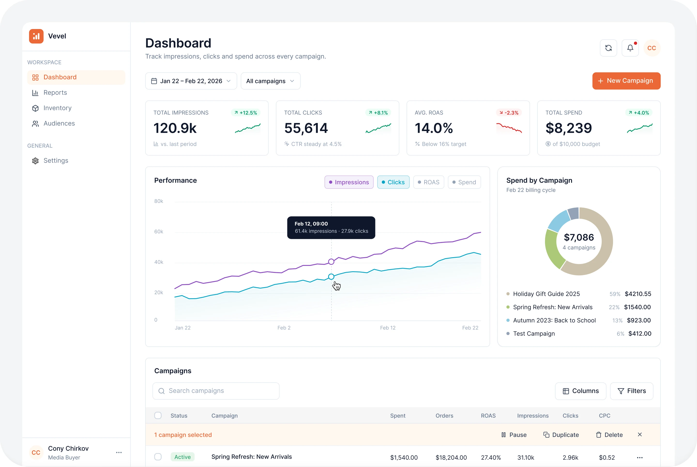
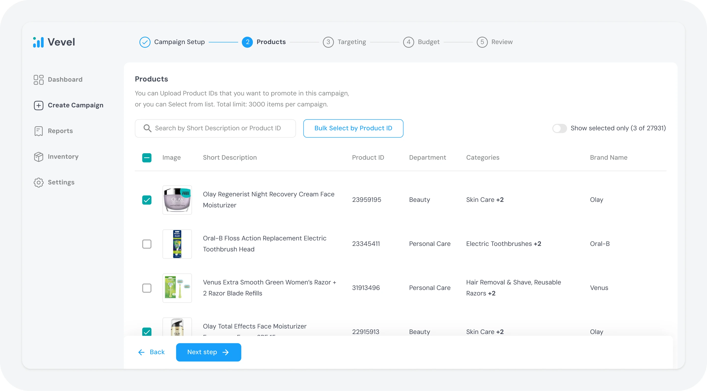
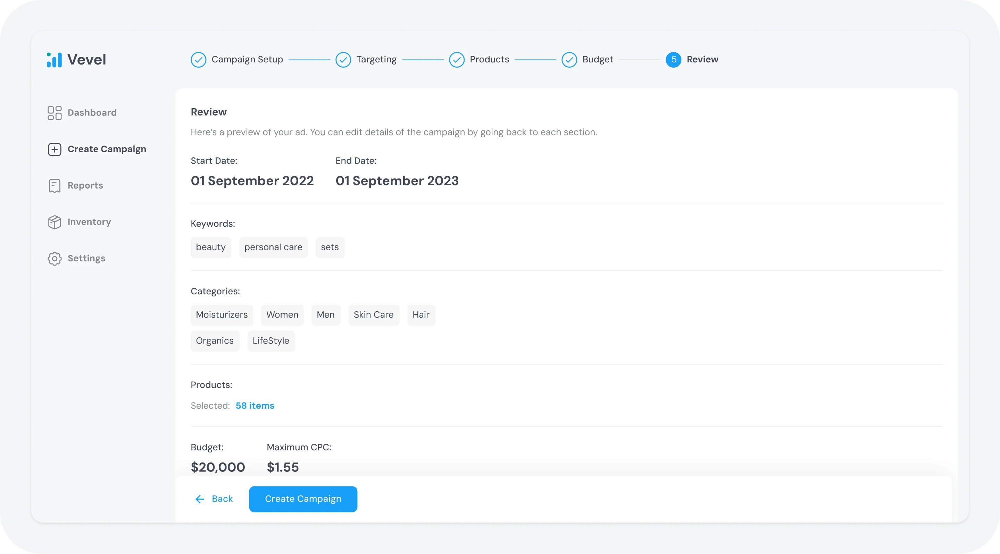
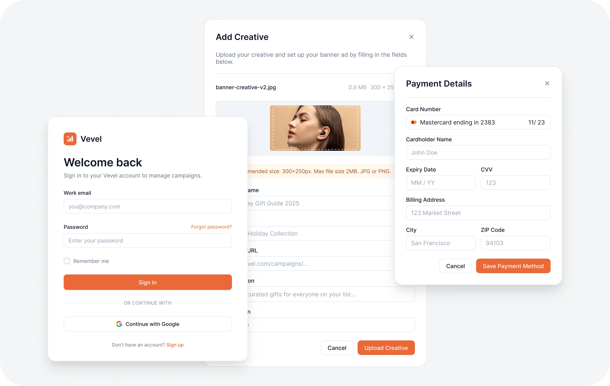
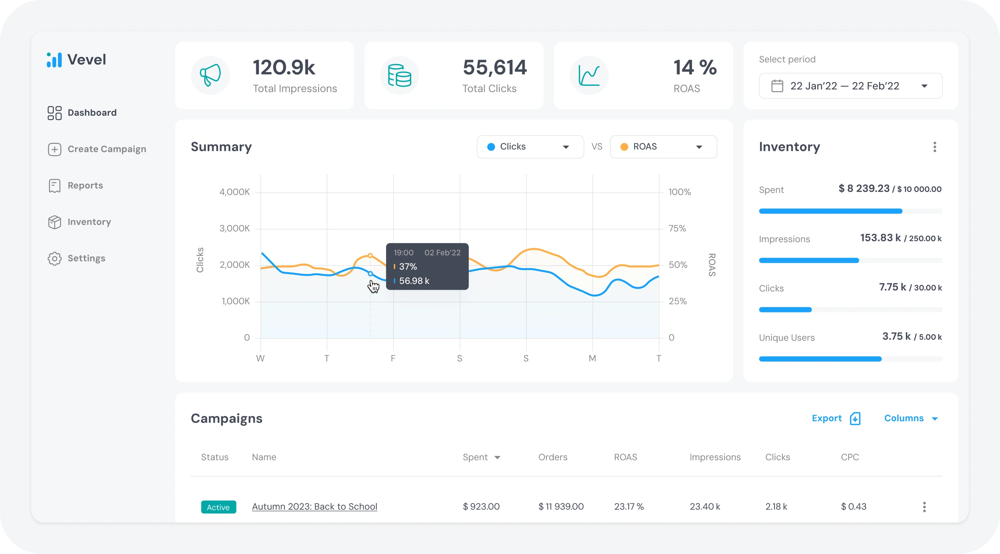

AdTech platform — a SaaS solution that lets companies run and manage advertising campaigns inside their own products.
The task
Redesign the campaign creation flow: the path was confusing and clients complained that it was hard to use.
Results
14 → 8 min on the core flow, plus deals with major clients such as Farfetch and Target.
The problem
I joined the project to rebuild the core scenario — creating an advertising campaign. Until then the development process had involved no UX designers, and clients regularly ran into trouble using the product and said so.
On top of that, the redesign had to satisfy the functional requirements of new prospects the company wanted to sign.

Design process
First I studied the product requirements and reviewed competitors to find the best practices for building advertising campaigns. From that I designed the first wizard concepts and the structure of the user flow.
Creating a campaign involved many stages and settings, so we split the process into clear steps with explicit actions and hints. Users always knew what to do next and how many steps were left.

Beyond the UX, I refreshed the product's visual language and made it feel more modern and easier to read.

From the design I built prototypes that the client used to demo the product to their own prospects. Each prototype was tailored to a specific company, following its branding and functional requirements.

After positive feedback from the client and their customers, I was asked to roll the new visual approach out across the whole product.
I went through the rest of the system, identified the patterns already in use and assembled a UI kit with the components, styles and usage rules the team needed. That gave the product one visual language and made further development more consistent.

Outcome
The work ended in a full interface overhaul, which helped the company sign several contracts with major clients such as Farfetch and Target.
Users rated the new interface highly: more than 60% said it had become easier to use. Time to complete the core flow dropped from 14 to 8 minutes.
Other cases
Kommo (formerly amoCRM)
How a single activation framework raised trial → subscription conversion by 4% in an enterprise CRM with 1M+ MAU

Fitness app
Launched a fitness app for an influencer with an audience of 2M+ followers

SaaS for HR managers and recruiters in healthcare
Made candidate screening 2.3× faster for a major client as the product entered the US market